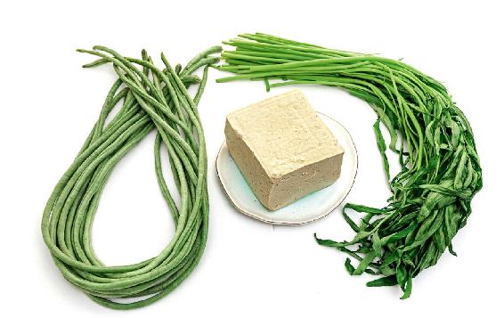
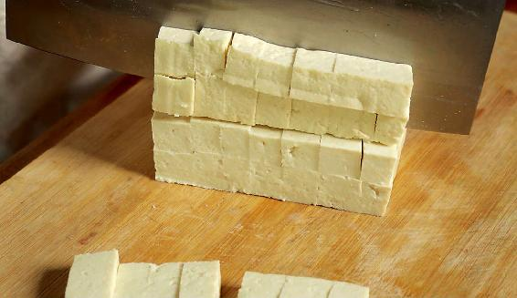
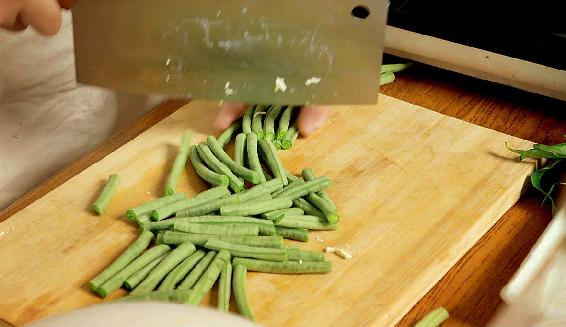
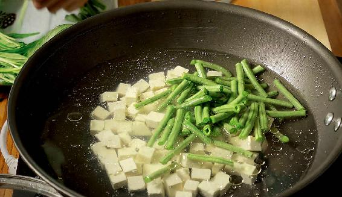
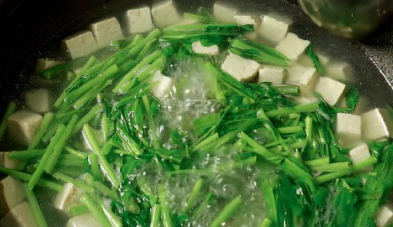
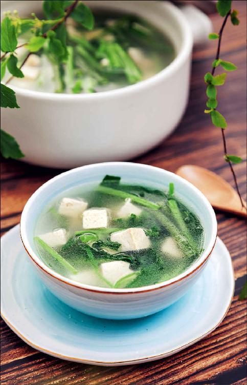

出伏之后，紧接着就是处暑节气了，这段时间，我们可以喝一道汤——出伏送暑汤。
这道汤是纯素的，但补养的效果确实不错，特别适合在出伏之后来喝。因为过完伏天人都比较虚，正是需要补养的时候，但同时还要祛湿气，喝出伏送暑汤正好可以彻底送走暑湿。
做这道汤的时间大概是10分钟，我们不需要煲老火汤，因为这道汤要吃的就是新鲜豇豆角和空心菜的营养。
出伏送暑汤

原料：豆腐1块，豇豆角1把，空心菜1把，胡椒粉、植物油和盐少许。

做法：
1.先把豆腐切块儿。豆腐要买老豆腐，不要内酯豆腐，因为不同的豆腐，它的作用也不一样，老豆腐清热的效果比较好。

2.把豇豆角切成大约两寸（6厘米）长的段。豇豆角在有的地方也叫长豆角，它正好也是在秋天上市。空心菜只取嫩的茎叶就可以了。

3.锅里放入清水，烧开以后放一点点盐和油，然后把切好的豇豆角和豆腐放进锅里。

4.待豇豆角煮熟以后，再放入空心菜，因为空心菜是非常容易熟的。锅里放入空心菜以后，就不要再盖锅盖了，要敞着锅煮。等汤再一次烧开之后，撒一点胡椒粉在汤里，就可以关火起锅了。

读者评论：它能帮助我们顺利地度过季节的转换
小玉：最近两天都在喝出伏送暑汤，明显感觉排便比较好。
杨杨：这几年，一到处暑节气，我都会给家人做出伏送暑汤喝，它能帮助我们顺利地度过季节的转换，汤也很好喝。
何金南：出伏送暑汤好清淡，喝了很舒服！
一尾鱼_fy：以前最不爱吃空心菜，但自从顺时养生后，对空心菜也不那么反感了。婆婆在家里楼顶上种了几棵空心菜，虽然只有几棵，但它们生命力强得让我吃惊，基本每天吃都是有的，采集不断，真好。
这道汤里的豇豆角，您最好不要轻易地去替换它，因为豇豆角是为数不多的可以补肾气的蔬菜。大多数蔬菜一般都是以排毒为主，但豇豆角是专补肾的，对吃素的朋友来说，它是很好的一道补养蔬菜。
空心菜在这道汤里有什么作用呢？就是排毒，它可以打通人体水液输送的通道，把人体多余的水湿通过小便排出。
在处暑期间，人体的湿气在逐渐地往下走，要防止它留在我们的下焦系统，就要利用空心菜把水湿给排出去。另外，这道汤里的豇豆角又给它加了一把力，因为豇豆角既可以帮助人体的肾脏排毒，又可以补气，增强我们排毒的功能。
这道汤里还有一个主角，它就是胡椒粉。有的朋友很害怕吃胡椒粉，其实胡椒粉是非常好的东西，它有一个作用，就是引火归原。
喝蔬菜汤的时候，我建议您一定要撒一点胡椒粉，这对于脾胃虚寒的朋友来说是很有好处的，尤其是到了秋天，在汤里加一点胡椒粉，可以很好地保护我们的脾胃。
有的朋友问我孕妇能不能喝，其实这道汤里的豆腐、豇豆角、空心菜，对于孕妇来说都是可以吃的，所以这道汤是老少皆宜的，全家人都可以喝。
而且它的口感是很清甜的，如果您觉得很对自己的胃口，那么在出伏之后，直到处暑节气结束，都是可以喝的。
虽然这道汤的名字叫出伏送暑汤，但它也是一道补肾排湿汤，只要您觉得自己体内还有湿气，那么在整个秋天您都可以经常喝这道汤。